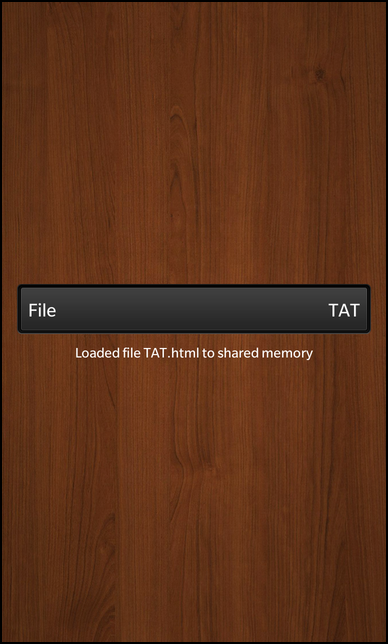

Files:
The Shared Memory Loader example shows how to use the QSharedMemory class to implement inter-process communication using shared memory.

In this example we'll learn how to communicate between multiple processes by writing/reading data to/from a shared memory and how to synchronize the access to the shared memory segment properly.
The example application is splitted in the two executables, sharedmemory_loader and sharedmemory. With the sharedmemory_loader the user can load a file from the file system into a shared memory segment from where the sharedmemory application reads the content of the file and displays it in the UI.
The central class in sharedmemory_loader is FileLoader, which encapsulates the loading of the file, that has been selected by the user, into the shared memory segment. Whenever the user selects a file from the DropDown control inside the UI, the loadFile() slot of the FileLoader is invoked:
onSelectedIndexChanged: { _fileLoader.loadFile(fileSelection.at(selectedIndex).value) }
Inside this slot we first try to read the complete content of the file whose file name has been passed:
// Try to open the file ... QFile file(QString::fromLatin1("app/native/assets/files/%1").arg(fileName)); if (!file.open(QIODevice::ReadOnly)) { m_status = tr("Unable to open file: %1").arg(file.errorString()); emit statusChanged(); return; } // ... and read its complete content into a temporary variable const QByteArray content = file.readAll(); file.close();
If this was successful, we try to attach to the shared memory segment that has been created by the sharedmemory application. For this we need the key of the shared memory segment which is hard-coded in this example:
static const char *s_sharedKey = "fileloader_shm_key";
After instantiating a QSharedMemory object with the proper key, we try to attach to that segment, which might fail if it doesn't exist (e.g. the sharedmemory application has not created it yet), or we don't have the needed access rights.
// Try to attach to the shared memory segment with the given key QSharedMemory sharedMemory(QString::fromLatin1(s_sharedKey)); if (!sharedMemory.attach()) { m_status = tr("Unable to attach to shared memory: %1\nPlease start the sharedmemory sample application!").arg(sharedMemory.errorString()); emit statusChanged(); return; } // Lock the shared memory segment before we do any modifications sharedMemory.lock(); // Copy the file content from the temporary variable into the shared memory segment strncpy(static_cast<char*>(sharedMemory.data()), content.constData(), sharedMemory.size() - 1); // Unlock the shared memory segment again ... sharedMemory.unlock(); // ... and detach from it sharedMemory.detach();
However if the attach() call was successful, we call lock() to gain exclusive access to this shared memory segment. If another process holds the lock already, our process is blocked until the lock is released by the other process. When we gained the access, we copy over the content of the loaded file from the temporary variable into the shared memory.
Afterwards we release the lock by calling unlock() and detach from the shared memory segment.